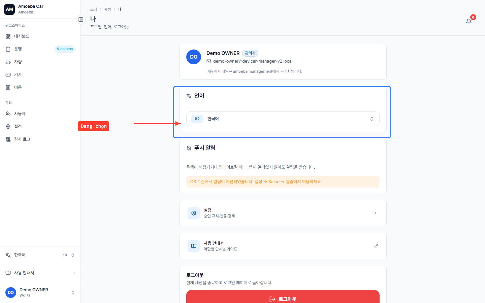

표시 언어 변경
- 대상
- 모든 역할
- 소요 시간
- 약 20초
- 범위
- 본인 UI에만 적용 — 다른 사람에게는 영향 없음
시스템은 3가지 언어를 지원합니다: 베트남어(기본), 영어, 한국어. 선택값은 본인 기기·브라우저에 저장되며 다음 로그인에도 자동 적용됩니다.
변경 방법
1
왼쪽 사이드바에서 나 항목 (또는 사이드바 하단의 프로필 아바타)을 클릭합니다.
2
"나" 페이지에서 언어 표시 카드를 찾습니다.

3
원하는 언어를 클릭합니다 (Tiếng Việt, English, 또는 한국어).
4
페이지가 자동으로 새로고침되며 전체 UI가 선택한 언어로 표시됩니다.
ℹ️
이 안내서는 베트남어와 한국어 모두 제공됩니다 — 우측 상단의 VI / KO 버튼으로 문서 언어를 변경할 수 있습니다.
참고 사항
- 언어 변경은 통화(항상
VND), 시간대(항상Asia/Ho_Chi_Minh), 날짜 형식에는 영향을 주지 않습니다 — 이는 조직 차원의 설정으로 관리자가 결정합니다. - 데이터 이름(차량명, 사용자명, 주소)은 입력된 그대로 표시됩니다 — 자동 번역되지 않습니다.
- 알림 이메일도 선택한 언어로 발송됩니다.